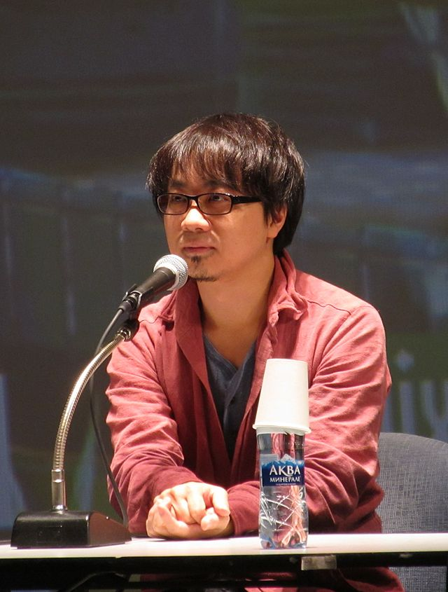

Makoto Niitsu (新津 誠, Niitsu Makoto); born February 9, 1973), known as Makoto Shinkai (新海 誠, Shinkai Makoto), is a Japanese animator, filmmaker, author, and manga artist.
Shinkai began his career as a video game animator with Nihon Falcom in 1996, and gained recognition as a filmmaker with the release of the original video animation (OVA) She and Her Cat (1999). Beginning his longstanding association with CoMix Wave Films, Shinkai then released the science-fiction OVA Voices of a Distant Star in 2002, and followed this with his debut feature film The Place Promised in Our Early Days (2004).
Shinkai's second feature film, the romantic drama anthology 5 Centimeters per Second (2007), gained critical acclaim, as did his subsequent releases, the dramas Children Who Chase Lost Voices (2011) and The Garden of Words (2013). Shinkai's 2016 fantasy romance Your Name was a critical and commercial success, becoming the third highest-grossing anime film of all time. His 2019 film, Weathering with You, also achieved similar critical and commercial success.
